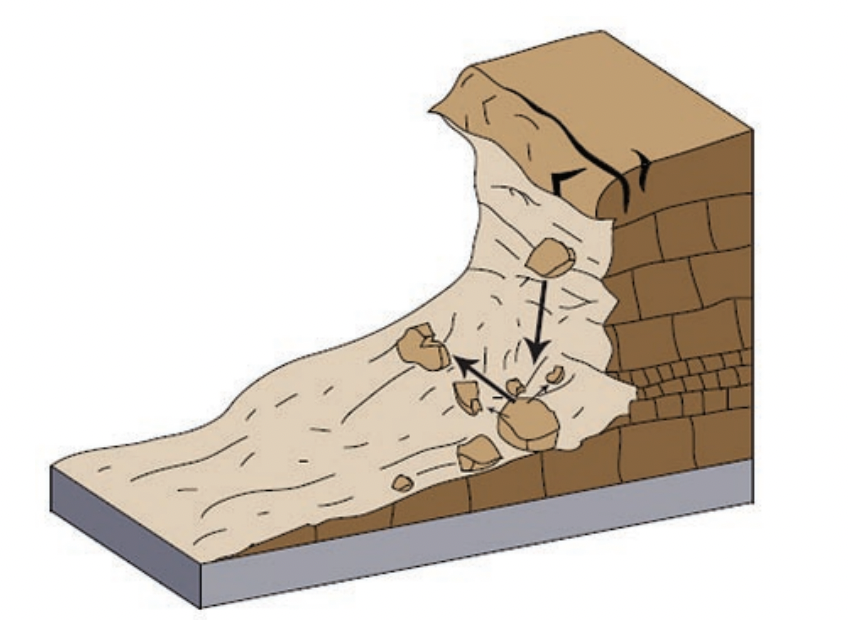
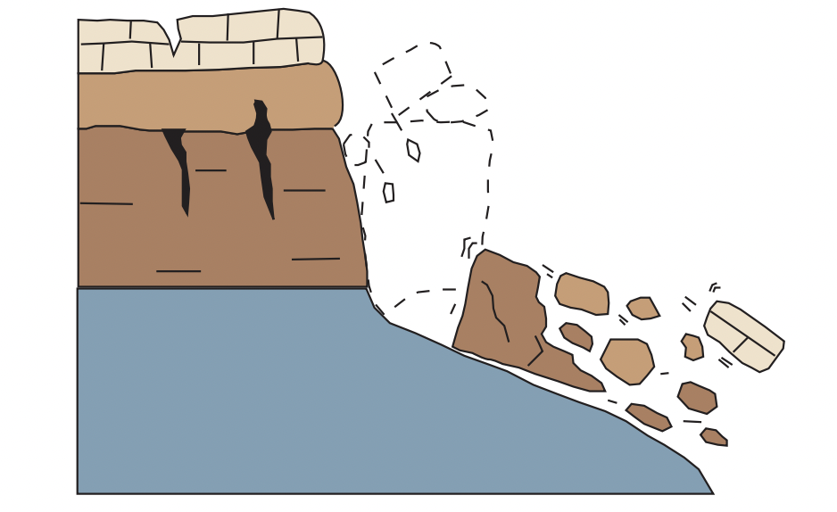
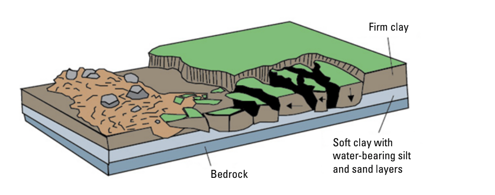
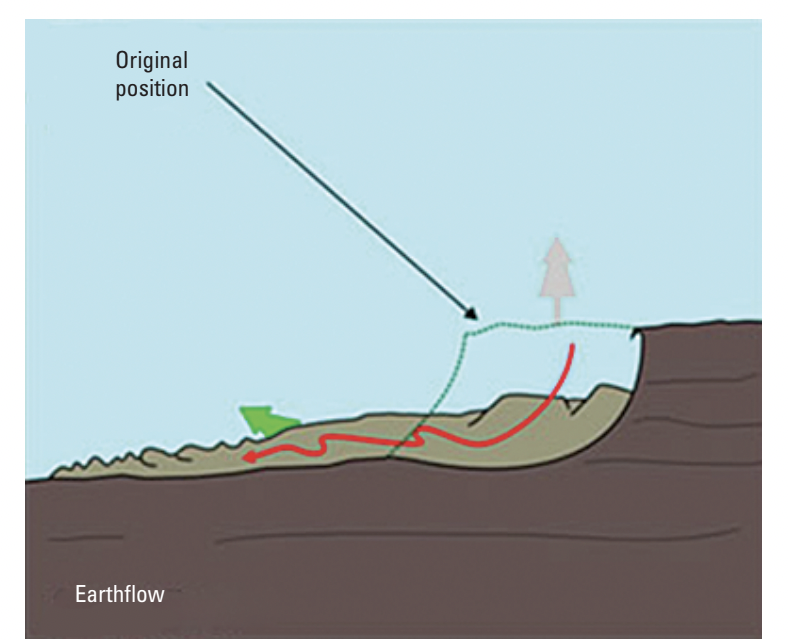
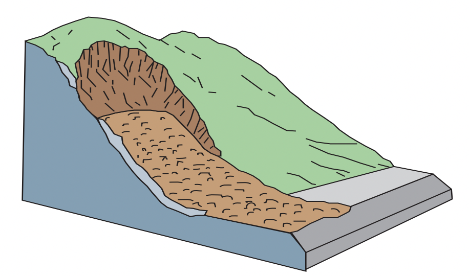
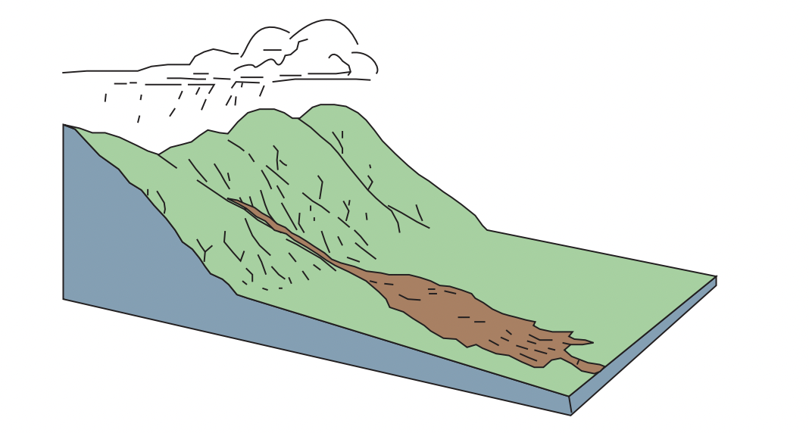
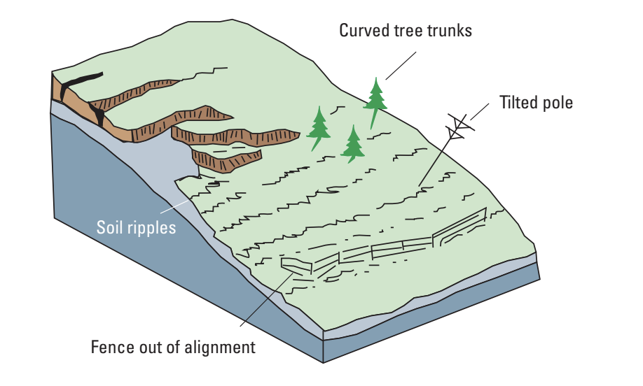
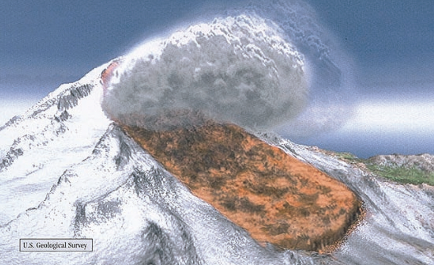

| Rockfall | Topple | Lateral spread | Earthflow |
|---|---|---|---|
|  |  |  |  |
| A sudden downward movement of rock or earth that gets detached from a slope or cliff. | A forward rotation (out of the slope) of a mass. The axis of rotation is below the center of gravity of the falling mass. | A slide on a gentle slope where a strong upper layer extends above an underlying softer layer. | A shallow movement of clay, silt, or sand on gentle to moderate slopes. |
| Debris avalanche | Debris flow | Creep | Lahar |
|---|---|---|---|
|  |  |  |  |
| A rapid, large flow formed by the collapse of an unstable slope resulting in fragmented debris moving very quickly down an open slope. | A rapid mass movement where various solid materials combine with water to form a slurry that flows down a slope. | An extremely slow downward shifting of soil or rock. | A type of debris flow seen only on volcanoes. It mobilizes the erupted solids and other debris on the slope. |
Both a rotational and a translational landslide involve soil or rock mass, and generally stem from a local failure before the whole mass is mobilized. A rotational landslide has a rupture surface shaped like a spoon, rotating around an axis above the slope. A translational landslide moves down and outward on a planar surface, and can move significant distances if the slope is steep enough.
Landslides can occur anywhere and are common to almost every US state. Landslides result in not only physical alteration of a slope, but sometimes also in extreme property and economic damage, as well as loss of human life. Studying landslides helps predict where and when they will occur and the extent of runout that will take place. This is vital in risk assessment. In addition, landslide research helps communities expanding into hilly or mountainous terrain plan infrastructure around these hazards, and put in place various mitigation strategies to reduce the potential damage caused by landslides.
Climate change is expected to become a huge factor in the severity and frequency of mass movements. A NASA study found that in the region of High Mountain Asia, extreme precipitation events will become more common in future years because of global warming. The study found that in some areas, this increase in precipitation will result in more landslide events. For example, they found that in the border region of China and Nepal, landslide activity could see up to a 70% increase. This increase in precipitation leads to soil saturation, which is a significant failure mechanism for landslides.
To analyze landslides, geotechnical analysis software is often used to determine key data points used in risk assessment. The program used to run the analyses done in this project was Optum G2, a geotechnical analysis software. For slope stability analysis, Optum G2 uses the Finite Element Method (splits slope into elements, analyzes individual elements for stress)to model a slope failure. The software’s capability allows us to set material parameters, change slope angles, introduce groundwater to the system, and finally run the various analyses needed.
The Oso Landslide happened on March 22, 2014 in the Steelhead Haven Community near Oso, Washington, causing 43 casualties and $60 million in property damages. The slide mass covered an area of around one square mile, and buried part of Washington State Route 530.